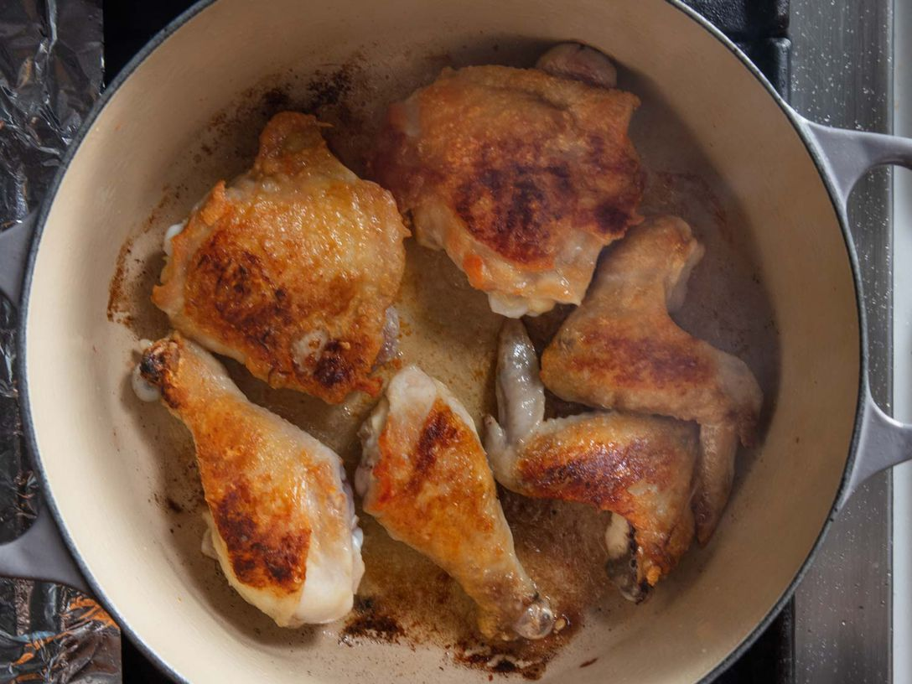
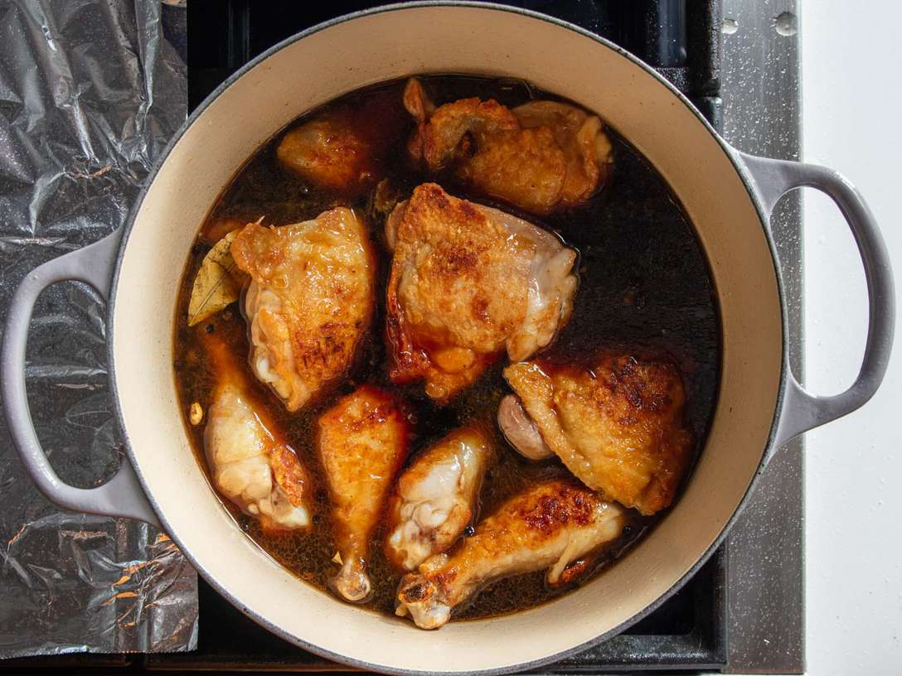
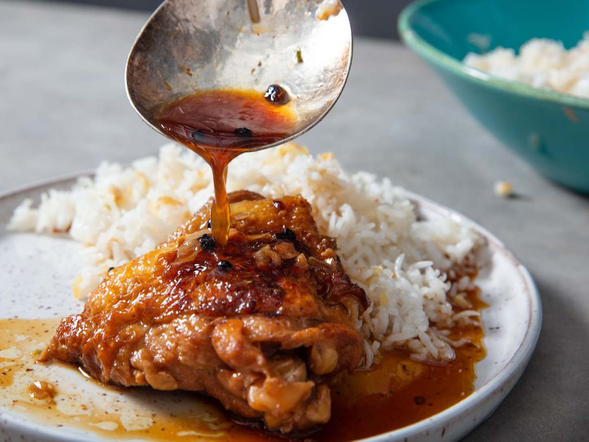

Chicken Adobo Recipe

Descripion
Nour and I first tried this recipe sometime in 2020 I believe. We had bought ourselves an instant pot and found
this dish soon after. It's a Filipino dish that goes incredibily well with a simple bowl of white rice. Below
I'd like to share with you this very same recipe. Thanks for reading.
Ingredients
-
1 tablespoon (15ml) canola oil or other neutral oil
-
4 bone-in, skin-on chicken legs, separated into thighs and drumsticks (about 2 1/2 pounds; 1.15kg)
-
Kosher salt
-
8 cloves garlic, thinly sliced
-
2 whole fresh bay leaves (or 3 whole dried bay leaves)
-
1 1/2 teaspoons whole black peppercorns
-
1 1/4 cups (300ml) water
-
1 cup (240ml) soy sauce
-
1 cup (240ml) rice vinegar (see note)
-
Steamed white rice or garlic fried rice, for serving
Steps
-
In a heavy-bottomed pot or Dutch oven, heat oil over medium heat until shimmering. Blot chicken dry with
paper towels, then season lightly all over with salt.

-
Working in batches if necessary, add chicken pieces to pot in a single layer, skin side down, making sure
not to overcrowd the pot. Cook until well browned, 6 to 7 minutes. Using tongs, flip chicken pieces and cook
until lightly brown on the second side, about 3 minutes. Transfer chicken to a plate and set aside.
-
Add garlic, bay leaves, and peppercorns to now-empty pot and cook, stirring constantly, until mixture is
very fragrant and garlic turns a light golden color, about 30 seconds. Add water and stir with a wooden
spoon, scraping up any brown bits on the bottom of the pot. Add soy sauce and vinegar, return chicken pieces
to pot, increase heat to high, and bring liquid to a boil. Reduce heat to low, cover, and simmer until
chicken is cooked through and tender, about 20 minutes, turning the chicken pieces halfway through.

-
To Serve:> The chicken is best served after sitting overnight in the refrigerator (see note), but it
can also be served immediately, with steamed white rice or (preferably) garlic fried rice. The chicken
pieces can also be briefly broiled before serving.

-
To Broil Chicken Adobo: Adjust oven rack to 6 inches below broiler element and preheat broiler to high.
Transfer chicken pieces to a paper towel–lined rimmed baking sheet and blot surface with more paper towels
to remove as much moisture as possible; discard paper towels. Arrange chicken skin side up on the baking
sheet and broil until chicken skin is crispy and lightly charred, about 2 minutes (keep an eye on the
chicken to ensure it does not burn). Serve immediately with steamed white rice or (preferably) garlic fried
rice, passing adobo sauce at the table.